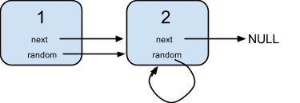
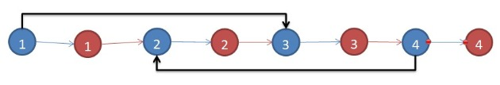

带有random指针的链表，做一个深拷贝

1. 解析
首先我们要明白什么是深拷贝，下面来介绍一下深拷贝和浅拷贝。
首先这个概念是针对指针的
- 浅拷贝：只拷贝指针地址，意思就是两个指针指向同一个地址
- 深拷贝：先new一个新的内存空间，然后把数据复制到新的内存空间中
所以，如果是简单的列表，那么我们只需要从头到尾遍历下来，new出对应个数的Node，并把它们的连接关系设置好就可以了，但是这道题目中每个节点Node出现了Random属性，也就意味着可能当前结点Node所依赖的那个Random对应的结点还没有被创建出来。
2. 递归解法
2.1. 解析
使用一个map来记录当前Node是否被创建，然后就可以从根节点开始递归拷贝
2.2. 代码
1
2
3
4
5
6
7
8
9
10
11
12
13
14
15
16
| class Solution {
public:
map<Node*, Node*> vis;
Node* copyRandomList(Node* head) {
if (head == nullptr) return nullptr;
if (vis.find(head) != vis.end()) return vis[head];
Node* root = new Node();
vis[head] = root;
root->val = head->val;
root->next = copyRandomList(head->next);
root->random = copyRandomList(head->random);
return root;
}
};
|
3. 插入法
3.1. 解析
上面的递归方法的空间复杂度是 \(O(n)\) ，下面这个方法可以把空间复杂度降到 \(O(1)\)

我们来看上面这个图，先遍历一遍list创建每一个node的副本，并且将副本插入到node的后面；然后再遍历一遍来将random的值赋予新创建的结点；最后，遍历把新创建的结点拿出来。
总共3步，完美的解决的问题，佩服想出这个方法的大神的思维！！！
3.2. 代码
1
2
3
4
5
6
7
8
9
10
11
12
13
14
15
16
17
18
19
20
21
22
23
24
25
26
27
28
29
30
31
32
| class Solution {
public:
Node* copyRandomList(Node* head) {
Node *p = head, *q, *root;
if (head == nullptr) return nullptr;
while (p != nullptr) {
Node* temp = new Node();
temp->val = p->val;
temp->next = p->next;
p->next = temp;
p = temp->next;
}
p = head;
while (p != nullptr) {
p->next->random = (p->random != nullptr) ? p->random->next : nullptr;
p = p->next->next;
}
p = head;
q = head->next;
root = head->next;
while (q != nullptr) {
p->next = q->next;
q->next = (q->next != nullptr) ? q->next->next : nullptr;
p = p->next;
q = q->next;
}
return root;
}
};
|